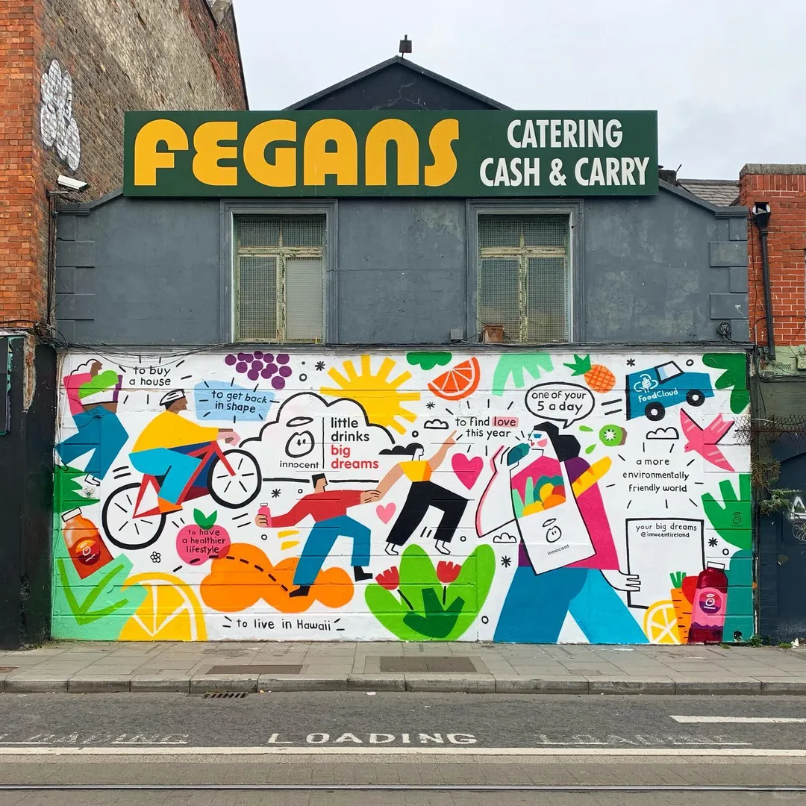
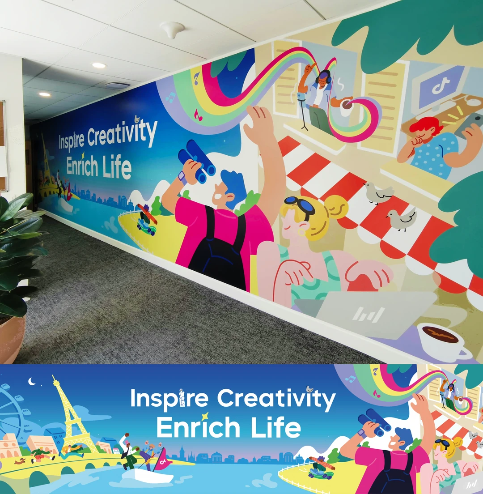
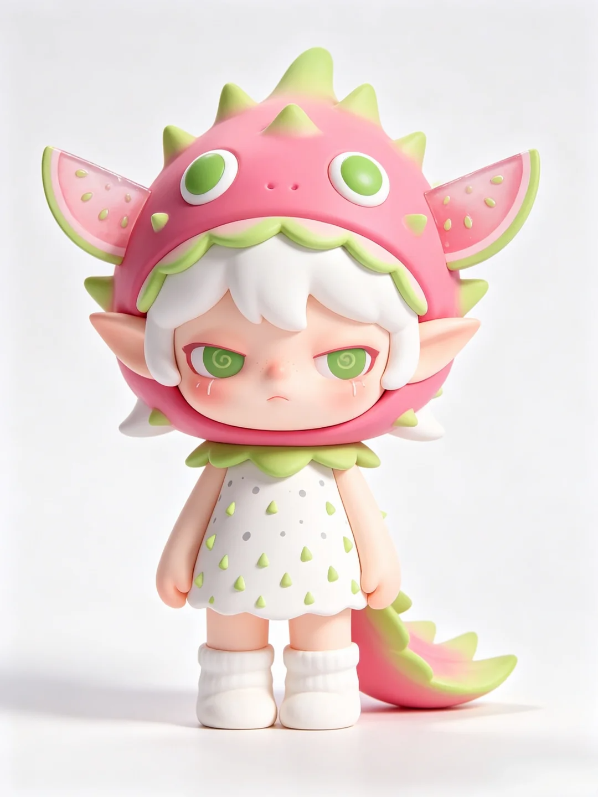
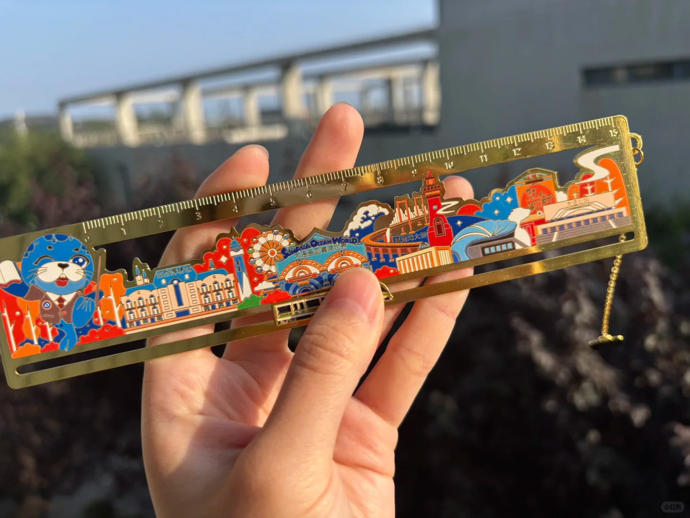
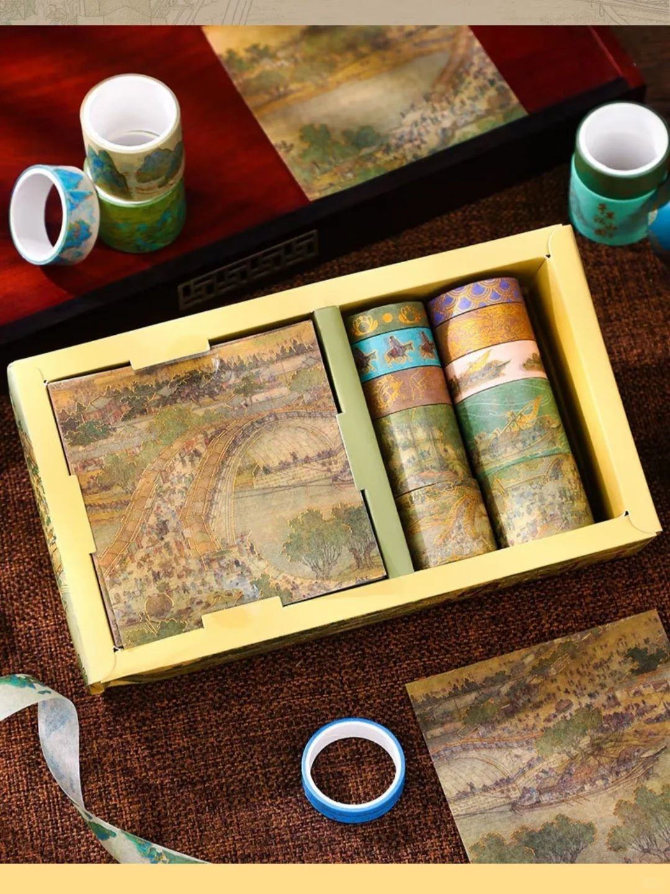
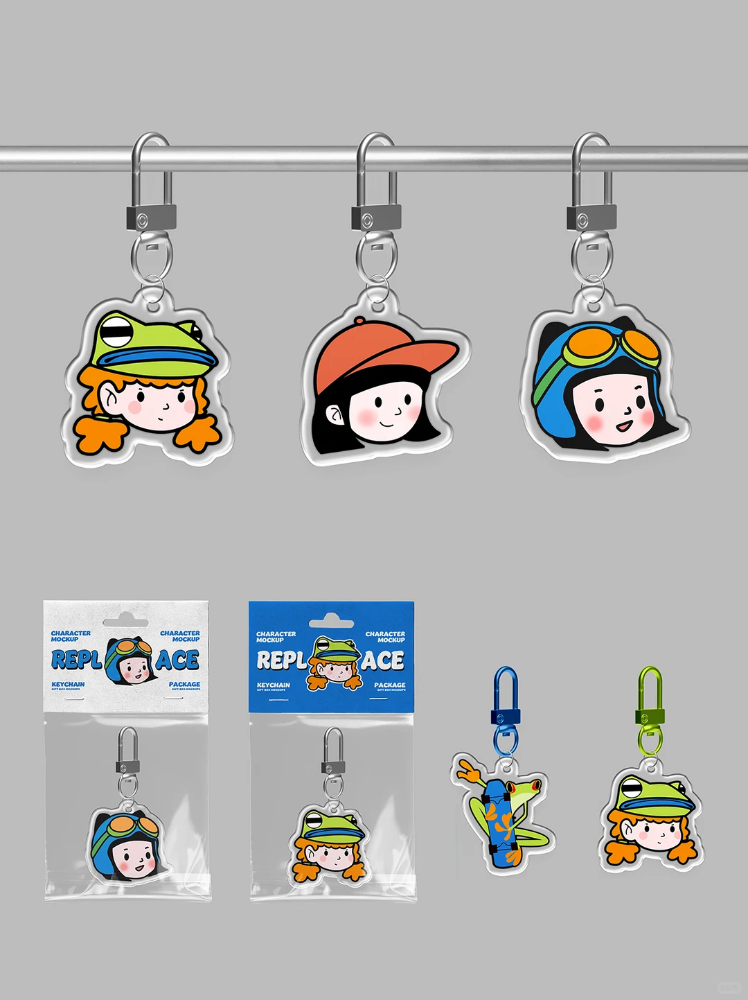

这是一门项目制设计课。不调研，用公开评论数据做研究；不预设主题，靠数据找方向。最终产出方案、小样和文创打样。
环境图形设计、户外视觉展陈、城市文化展线
按实际落地内容表述
课程以城市文化为对象，以公开评论数据（小红书/抖音/大众点评等）为依据，完成从IP到文创的全案设计。优秀方案将应用于实际城市文化展线，学生参与数据研究、设计、打样、现场配合和开幕传播。
以下是本课程涉及的视觉方向：墙绘艺术、文创打样、IP角色、导视系统。

200米展线叙事，从屏幕到墙面的尺度转换

可重复、可延展的视觉符号，保持识别度

树脂/搪胶工艺，形象压轴，换色或夜光隐藏款

精密蚀刻，结合地标建筑的实用美学

承载环境图形，把200米展线"带走"

低成本走量，打卡兑换，集章奖品
训练的不是单一"画图"能力，而是从数据到设计、从设计到落地、从落地到传播的完整项目能力。
建立关键词矩阵，采集公开评论。清洗、编码、做情感分析。从评论里判断：大家喜欢什么、记住什么、抱怨什么、想带走什么。
从城市文化里提炼符号、故事、气质。把抽象文化转成可视化的图形、角色、色彩。给200米展线分段，设计起承转合的节奏。
设计IP三视图、表情、性格、色彩。让IP能用在环境图形、展线、文创产品上，考虑IP的延展性（挂件、胶条、手办）。
做模块化图形、导视符号。处理从屏幕到200米户外墙面的尺度放大。设计夜间效果，考虑材质、工艺、照明、观看距离。
聚焦三类产品：挂件、胶条、手办。控制成本与工艺，保证课程可打样、可落地。做产品设计图、包装方案、打样文件。
做施工图、小样。现场配合安装。策划开幕活动、集章打卡机制，形成"展线打卡—文创带走—二次传播"闭环。
核心任务： 用公开评论数据完成城市IP与文创机会研究，不做田野调研，不预设具体文化元素。
核心任务： 基于研究，完成城市IP、环境图形、展线分段和文创设计。
核心任务： 把方案变成可打样、可展示、可传播的成果。
| 周次 | 阶段 | 做什么 | 交什么 |
|---|---|---|---|
| 1 | 研究 | 研究框架与关键词 | 研究问题与关键词矩阵 |
| 2 | 研究 | 评论采集 | 评论数据表 |
| 3 | 研究 | 清洗与编码 | 编码表、情感图 |
| 4 | 研究 | 研究汇报 | 研究报告 |
| 5 | 设计 | IP设计方法、角色、符号、草图 | IP草图 |
| 6 | 设计 | IP深化：三视图、表情、色彩 | IP手册初稿 |
| 7 | 设计 | 环境图形：模块、尺度、材质、导视 | 图形系统方案 |
| 8 | 设计 | 展线分段：主题、节点、夜间效果 | 分段草图 |
| 9 | 设计 | 文创：挂件、胶条、手办设计 | 文创设计图 |
| 10 | 设计 | 中期整合：IP+图形+展线+文创 | 中期汇报文件 |
| 11 | 落地 | 施工图与工艺、材料 | 施工图初稿 |
| 12 | 落地 | 小样与文创打样 | 小样与打样稿 |
| 13 | 落地 | 相关方对接、修正 | 修正稿 |
| 14 | 落地 | 现场配合、局部共创、影像 | 配合记录 |
| 15 | 落地 | 开幕传播：导览、集章、二维码 | 传播方案 |
| 16 | 落地 | 终期答辩、展览、归档 | 终期成果 |
只做三类，不贪多，聚焦打样和传播。
| 品类 | 数量 | 工艺建议 |
|---|---|---|
| 挂件 | 2—3款 | 亚克力、软胶、金属烤漆 |
| 胶条 | 3—4款 | 和纸胶带，含总图与分段款 |
| 手办 | 1+1 | 树脂/搪胶，常规+隐藏款 |